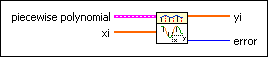

Evaluate Interpolating Polynomial VI
Owning Palette: Interpolation & Extrapolation VIs
Requires: Full Development System
Takes the piecewise polynomial cluster and computes the interpolated values yi at each xi location.

 Add to the block diagram Add to the block diagram |
 Find on the palette Find on the palette |